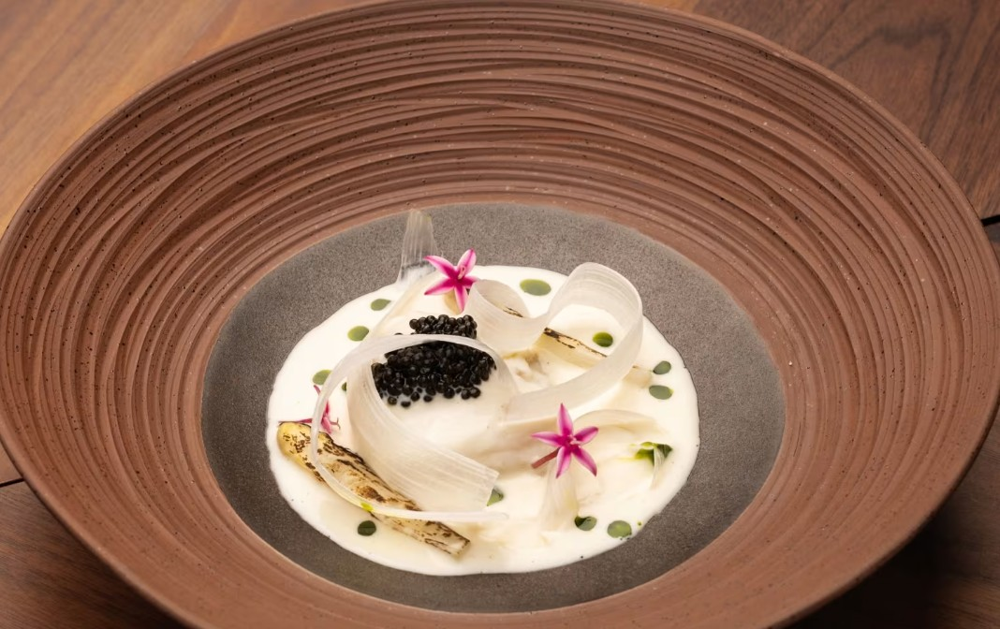
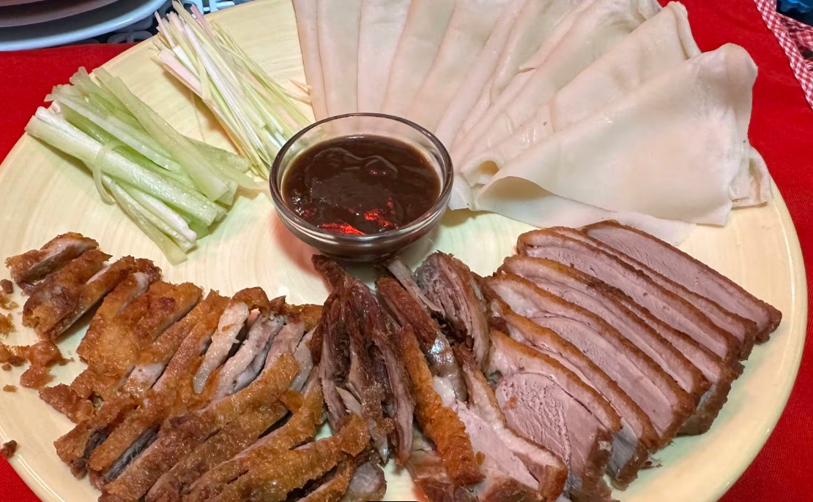
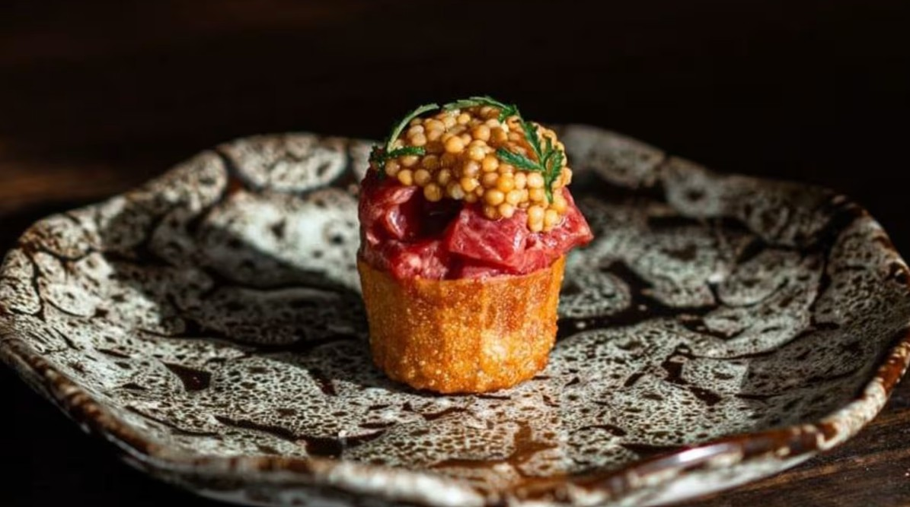
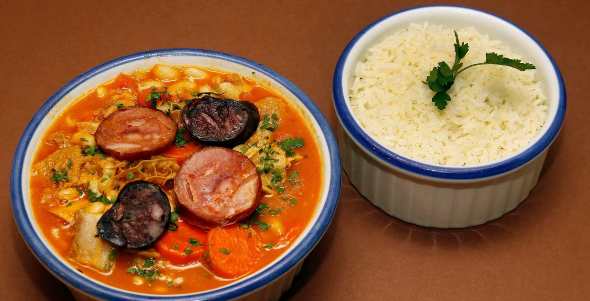

Registe o seu restaurante
Login
Discover and book the best restaurants
Search
Portugal
Espanha
Inglaterra
Alemanha
Popular Restaurants in Lisbon

Marlene

Ato Gastronomico
Popular Restaurants in Porto

Liz

O Loureiro
 Registe o seu restaurante
Registe o seu restaurante
Registe o seu restaurante
Registe o seu restaurante